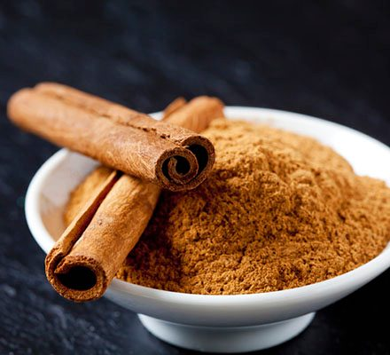
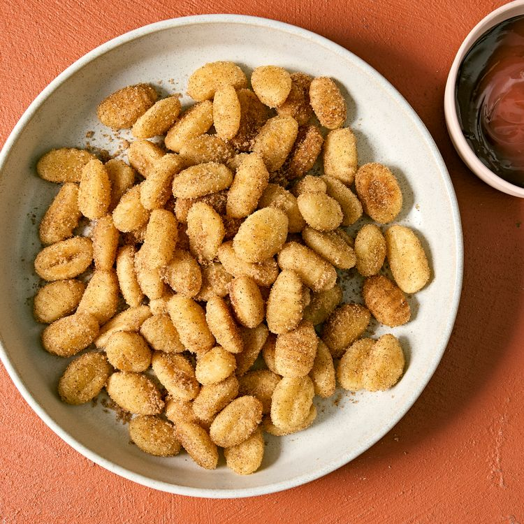
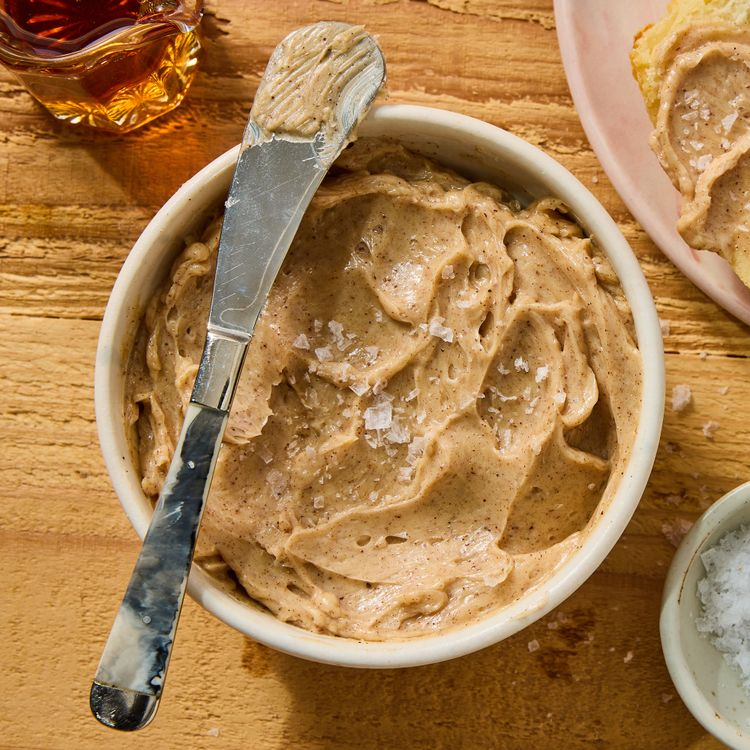
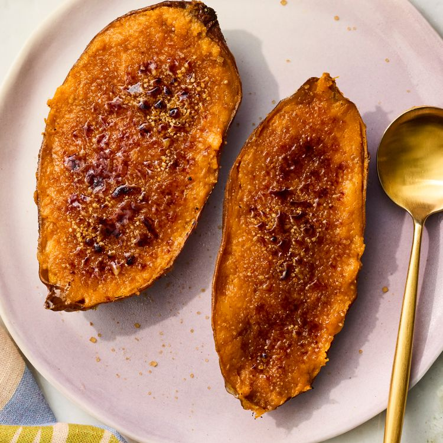

Discover healthy recipes with cinnamon
See RecipesBenefits
-
Anti-inflammation
There is a lot of research, mostly in the lab or in animals, that finds that cinnamon is an effective anti-inflammatory. Researchers tested the plant chemicals found in cinnamon and discovered antioxidant and anti-inflammatory effects. In one study, certain cinnamon compounds also targeted free radicals with promising results.
-
Cancer prevention
One of the key approaches to treating cancer is to stop angiogenesis — the formation of new blood vessels to feed tumors. A study showed that cinnamon can slow down or hold off angiogenesis, cell growth, and cellular signaling. This suggests that cinnamon could be a tool in preventing or treating cancer. It's important to know that the research into cinnamon as a cancer treatment is all based on studies in the lab or in animals. There is also research that suggests that eating cinnamon may not be an effective way to gain any of its potential benefits.
-
Antibiotic properties
The compound cinnamaldehyde is responsible for cinnamon's odor and flavor. This plant chemical also has proven widespread antibiotic effects. Cinnamaldehyde was tested against several bacteria and viruses, including staphylococcus, E. coli, salmonella, and candida. Researchers found that it was able to prevent these bacteria from growing.
-
Protection from oxidative stress
Cinnamon has a ton of antioxidants, like polyphenols, which are substances that can prevent or slow cell damage. Some of its antioxidants are so strong that cinnamon can sometimes be used as a natural food preservative. Experts have seen that taking cinnamon supplements can boost antioxidant levels in your blood as well as lower inflammation markers.
-
Heart disease prevention
Cinnamon could lower your triglycerides and total cholesterol levels, which could help prevent heart disease. If you take supplements with at least 1.5 grams of cinnamon a day, it may lower your total cholesterol, LDL (or bad) cholesterol, triglycerides, and blood sugar — especially if you have metabolic disease. It may also lower blood pressure if you consistently take it for more than eight weeks.
Research
Cinnamon exerts beneficial control effects against pro-diabetic diets in a number of ways.
Cinnamon can inhibit numerous digestive enzymes, such as alpha-glucosidase, sucrase
and potentially pancreatic amylase (although the only results were confounded with acarbose).
Via inhibition of these enzymes, cinnamon can decrease the influx of glucose into systemic
circulation and avoid overly significant insulin spikes.
In systemic circulation (beyond the liver) cinnamon also possesses anti-diabetic effects.
A compound in cinnamon, methylhydroxychalcone polymer (MHCP), acts as an insulin mimetic
on adipocytes. MHCP's effects as an insulin mimetic are dose dependent, and act by
transphosphorlyating the insulin receptor on the cytoplasmic membrance (the same mechanism
as the insulin molecule itself). Its effects on glucose uptake and glycogen, however
dose-dependent, seem to be time-delayed (When insulin acts within 10 minutes of reaching
the cell, MHCPs take 30-60, suggesting an intra-cellular time delay).
Cinnamon has also been implicating in aiding insulin function, potentiating its effects
more than 20-fold in vitro.
When ingested in human trials, cinnamon shows much promise in reducing blood glucose
levels and sometimes markers of lipid metabolism (LDL, Triglycerides, Total cholesterol).
There are also intervention studies noting improved insulin sensitivity with cinnamon
extract, possibly vicariously through the reduced blood glucose levels.
Recipes



Contact
Website made by --
Email: --
Phone: --